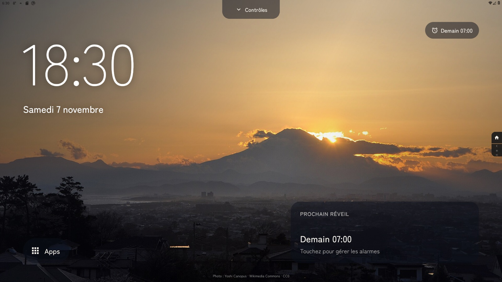
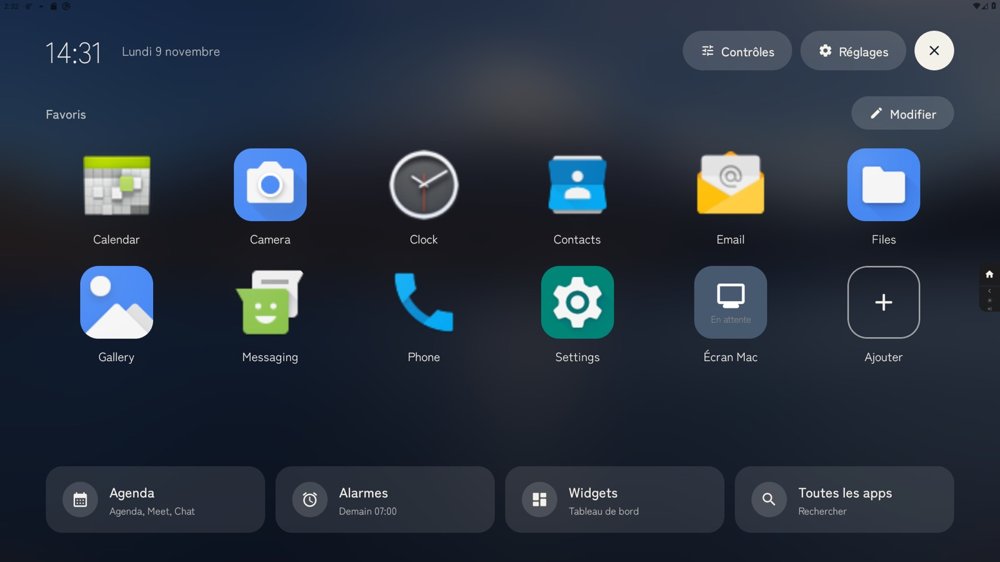
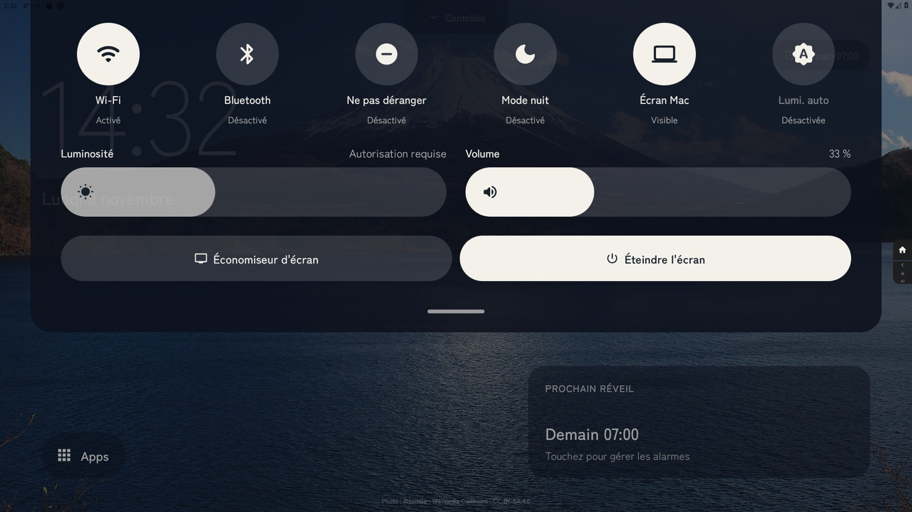
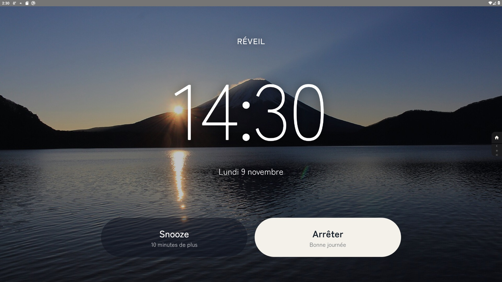
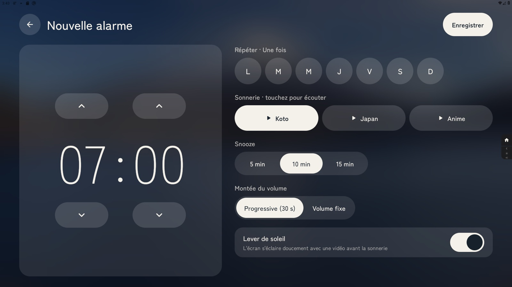
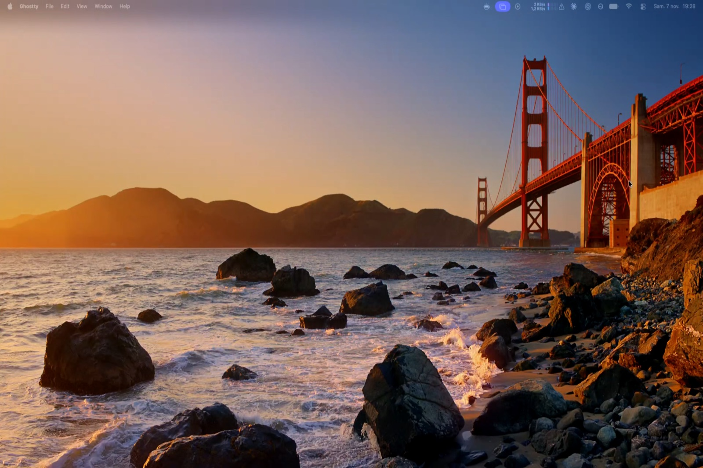
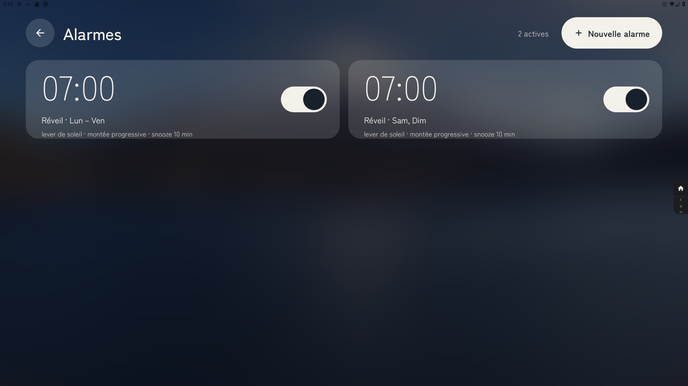
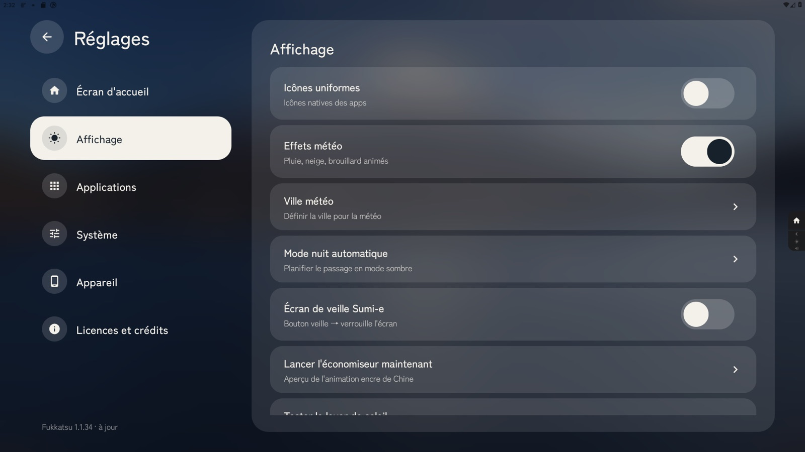
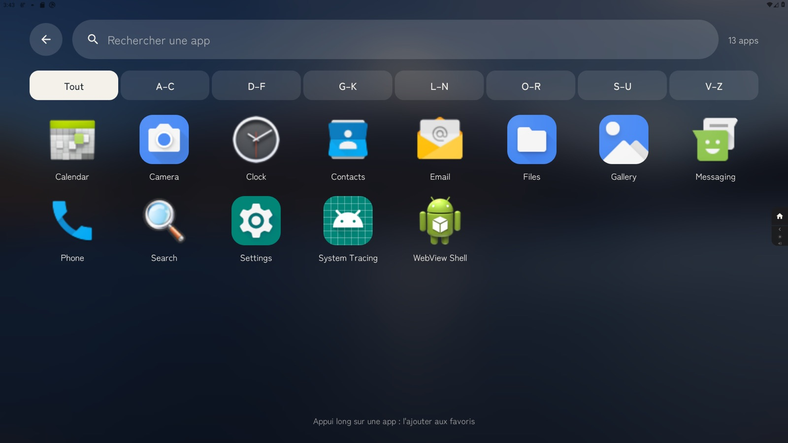
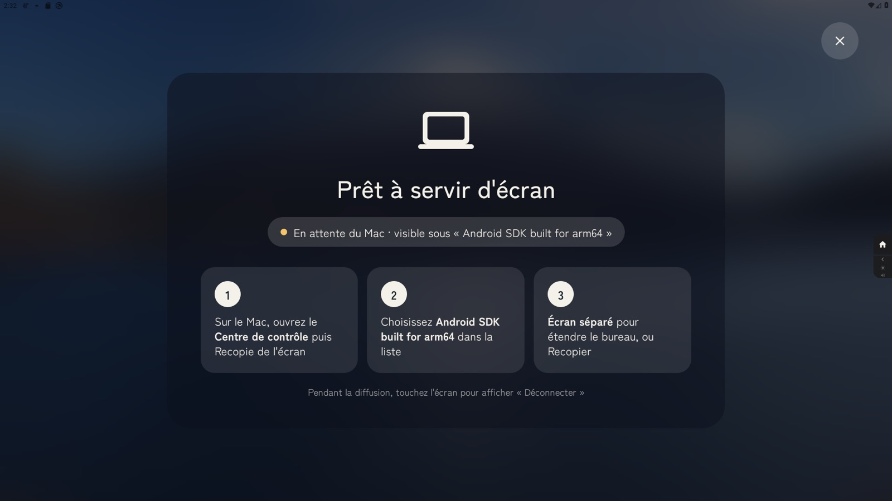

Fukkatsu (復活, « renaissance ») transforme un Meta Portal en écran ambiant : le mont Fuji au fil de la journée, l'heure en grand, et tout le reste à portée de doigt. Sans Google Services.

Le Portal reste allumé toute la journée : autant qu'il soit beau. La photo du Fuji change à l'aube, en journée, au soir et la nuit. Dessus, seulement l'essentiel, lisible depuis le canapé.
Fini les gestes cachés. Deux boutons visibles en permanence : « Apps » en bas, « Contrôles » en haut. Chaque zone tactile fait au moins 64 points, les actions principales jusqu'à 150.

Un toucher n'importe où sur l'écran ambiant fait apparaître vos favoris en icônes de 140 points, sur la photo floutée.

Il descend du haut de l'écran. Tout se règle sans jamais ouvrir les réglages Android du Portal. Après trois minutes sans contact, la luminosité baisse doucement d'elle-même.
Le Portal devient un réveil lumineux : l'écran s'éclaire doucement avant la sonnerie, et deux gros boutons répondent au premier toucher, même les yeux mi-clos.



Nouveau dans la 2.0 : le Portal reçoit la recopie d'écran AirPlay du Mac. Centre de contrôle → Recopie de l'écran → choisissez le Portal.
Le même langage partout : du verre posé sur la photo du moment, une seule police japonaise, des lignes hautes et faciles à viser.




Un script fait tout : installation de l'APK, permissions, et Fukkatsu comme launcher principal. Les mises à jour arrivent ensuite directement sur le Portal.
# Cloner git clone https://github.com/cyprienbrisset/fukkatsu-nop.git cd fukkatsu-nop # Construire, installer et configurer comme launcher bash scripts/provision-portal.sh --set-launcher